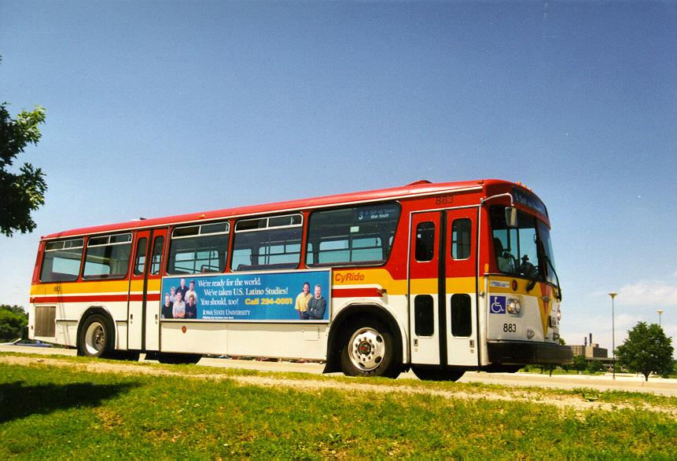

A final scene from campus shows something which is not seen anywhere else in the world. "Cy-Ride" is a transportation system that many students, staff, and residents of Ames use to travel around the town. The colors are the school´s traditional Cardinal and Gold. Hope to see you some time on campus. | |
|  | Section Index |
Section Index | Main Menu | Homepage Fair use of these photos for educational purposes is permitted. | |
|---|---|